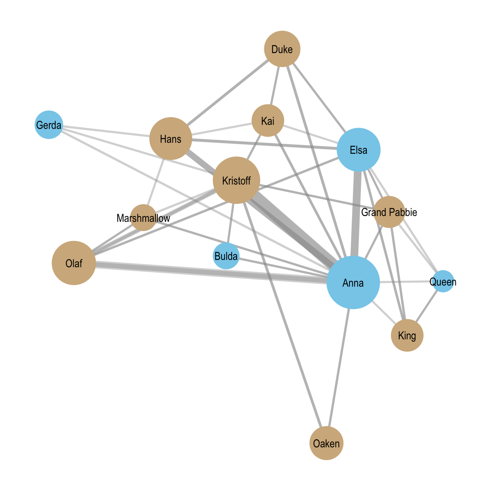
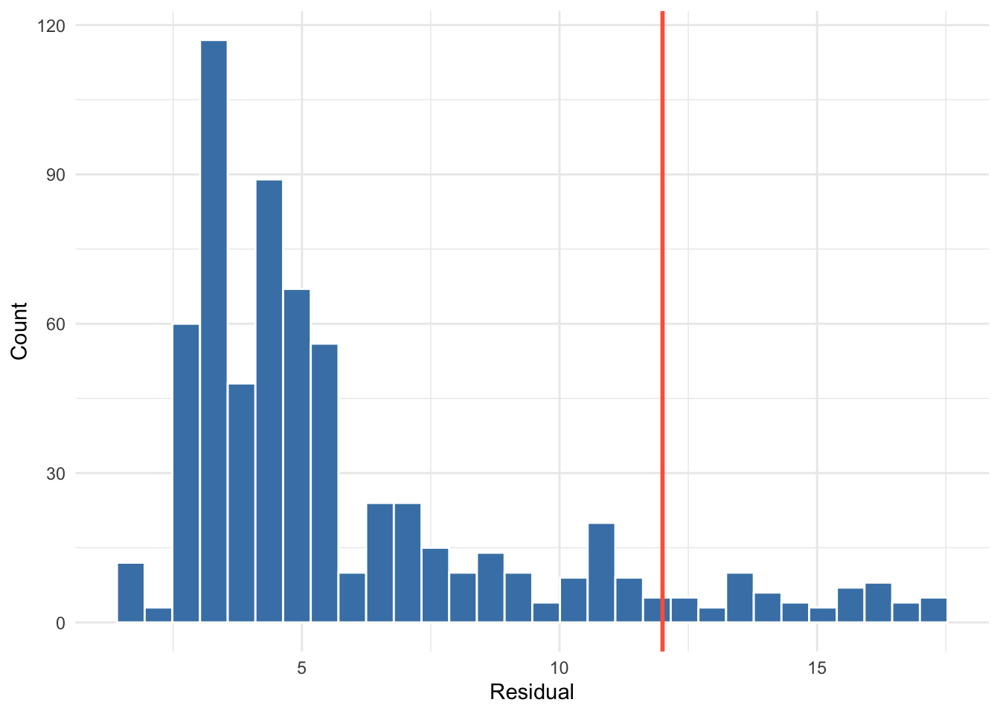

library(relevent)19 Relational Event Models (REMs)
Imagine you are watching a group of people at a party. At any moment, someone might start a conversation with someone else. The question is: who will start talking to whom next?
Many different interactions are possible, but only one actually happens. Understanding why that particular interaction occurs rather than any of the others is the kind of problem that event-based statistical models are designed to address.
One approach to studying such processes is Cox regression, a statistical method used to analyze events that unfold over time. Instead of focusing only on whether something happens, Cox regression models the rate at which events occur, and how different factors make an event more or less likely to happen sooner rather than later. In intuitive terms, it helps us understand which possible events are “more likely to happen next” given the current situation and the characteristics of the actors involved.
Relational Event Models (REMs) build on this logic to study social interactions as they occur in sequence. Rather than treating relationships as static connections between individuals, REMs conceptualize networks as streams of actions (such as messages, conversations, or interactions) unfolding over time.
Traditional approaches in social network analysis have typically relied on two dominant perspectives. On the one hand, static network models, such as Exponential Random Graph Models (Chapter 17), focus on long-term equilibrium patterns in aggregated networks. On the other hand, longitudinal network models, such as Stochastic Actor Oriented Models (Chapter 18), examine how relatively stable ties evolve across discrete time periods. Both approaches emphasize relationships as relatively enduring structures observed over bounded intervals.
In contrast, Relational Event Models shift attention to the fine-grained sequence and timing of discrete behavioral events. Rather than treating ties as fixed or slowly evolving entities, REM conceptualizes networks as streams of interaction. Social structure is not simply observed, it is continuously produced and reproduced through temporally ordered actions.
A key distinction between ERGMs and REM lies in the question each approach seeks to answer. ERGMs ask whether a particular network structure is likely to emerge within a defined time window. REM, by contrast, asks:
Given the history of prior interactions, how likely is it that actor a will direct an event toward actor b at a specific moment?
This represents a conceptual shift from modeling cumulative structures to modeling event rates. In REM, the fundamental unit of analysis is not the tie, but the event. Each event is understood as occurring within a dynamic system shaped by prior interactions. The probability (or rate) of a new event depends on the evolving history of the network.
Relational Event Models pursue two central analytic objectives:
- Prediction: Accurately predict who will send a message to whom, given the prior sequence of events.
- Explanation: Identify the factors that influence the propensity for interaction between two actors.
These factors may include:
- Node attributes (e.g., status, role, demographic characteristics)
- Dyadic attributes (e.g., similarity, shared group membership)
- Historical patterns of communication (e.g., reciprocity, repetition, transitive closure)
- Environmental or contextual factors (e.g., time constraints, institutional settings)
By incorporating these elements, REM enables researchers to test hypotheses about the mechanisms that generate interaction sequences.
This chapter introduces the theoretical foundations and methodological tools of Relational Event Models. It begins by situating REM within the broader landscape of network analysis and clarifying its event-centered logic. It then develops the core components of the model (event histories, risk sets, and rate functions) before examining how structural, attribute-based, and contextual effects are specified and interpreted.
Through this approach, we will see how REM provides a rigorous and flexible framework for modeling dynamic interaction processes, illuminating the micro-level mechanisms through which social structure emerges over time.
19.1 Packages Needed for this Chapter
NoteNote on Alternative Software for Relational Event Models
In this chapter we use the relevent package to estimate relational event models. The package implements the framework introduced by Butts (2008) and provides a straightforward and widely used approach for estimating REMs from sequences of dyadic interactions.
Several alternative implementations are also available. The goldfish package provides a more modern and flexible framework for relational event modeling. In contrast to relevent, which requires users to manually construct event statistics and covariates, goldfish offers a formula-based interface that allows endogenous effects and actor attributes to be specified directly within the model. The package also supports a broader range of structural effects and is designed to scale more efficiently to larger event datasets.
Another option is the rem package, which provides a simplified implementation of relational event models with a more modern interface than relevent. In particular, rem integrates more naturally with tidyverse-style workflows, making it convenient for researchers who prefer a tidy data structure and formula-based model specification. While it supports many core REM features, it is currently less widely used in applied research than relevent or goldfish.
Despite these differences in implementation, the underlying statistical logic remains the same across packages: relational event models estimate the intensity of possible interactions and compare competing events within a risk set. For introductory applications and teaching purposes, relevent remains a convenient and transparent tool, while goldfish or rem may be preferable in more complex or larger-scale analyses.
19.2 Model Specification
When relational event data contain information about the order of events (but not their precise timestamps), the modeling problem can be framed in terms of relative event hazards. This situation is mathematically equivalent to estimating a Cox proportional hazards model (or Cox regression) over a sequence of discrete event opportunities (Butts 2008). Rather than modeling the exact timing of events, we instead model the relative rate (or intensity) at which a particular interaction occurs next, given the prior history of events.
19.2.1 Formal Specification of the Relational Event Model
Following Butts (2008), relational event models are formulated in terms of a conditional event intensity function, which represents the instantaneous rate at which a specific interaction occurs given the past event history.
Let \(\lambda_{ab}(t)\) denote the intensity of an event from actor \(a\) to actor \(b\) at time \(t\), given the history of past events \(H_t\). The model is specified as
\[ \lambda_{ab}(t \mid H_t) = \lambda_0(t)\exp(\theta^\top s_{ab}(t)) \]
where:
- \(\lambda_{ab}(t)\) is the event intensity for interaction \(a \rightarrow b\) at time \(t\),
- \(\lambda_0(t)\) is the baseline rate of events,
- \(s_{ab}(t)\) is a vector of statistics describing the event (e.g., actor attributes, dyadic covariates, or history-based structural effects),
- \(\theta\) is a vector of model parameters.
The statistics \(s_{ab}(t)\) are typically functions of the event history, meaning they evolve as new interactions occur.
When only the order of events is observed (rather than exact timestamps), inference can proceed using the partial likelihood, which compares the intensity of the observed event with the intensities of all other possible events in the risk set \(R_t\). The probability that a specific event \(a \rightarrow b\) occurs next is therefore
\[ P(a \rightarrow b \text{ occurs next}) = \frac{\exp(\theta^\top s_{ab}(t))} {\sum_{(i,j)\in R_t}\exp(\theta^\top s_{ij}(t))} \]
where \(R_t\) denotes the set of all interactions that could occur at time \(t\).
This formulation shows that relational event models explain which interaction occurs next by comparing the relative intensities of all competing events in the risk set.
Although REMs are typically written using event intensities, estimation for ordered event data relies on the same likelihood logic as Cox proportional hazards models.
19.2.2 Relational Event Data Structure
To apply the event-based hazard logic to social interactions, we need a specific type of data structure known as relational event data. Rather than representing relationships as static ties between actors, relational event data record individual interactions as they occur over time.
Each observation typically includes:
- a sender (the actor initiating the interaction),
- a receiver (the actor targeted by the interaction),
- and a time or order indicating when the interaction occurred.
For example, a relational event dataset describing communication might look like this:
| time | sender | receiver |
|---|---|---|
| 1 | Alice | Bob |
| 2 | Bob | Alice |
| 3 | Carol | Alice |
In this format, the network is not represented as a fixed structure but as a chronological sequence of actions. The history of past events becomes crucial, because earlier interactions influence the likelihood of future ones. For instance, a reply may be more likely after receiving a message, or individuals who communicate frequently may continue interacting.
Relational event data therefore allow researchers to study how interaction processes unfold moment by moment, rather than only observing the final network structure.
19.2.3 Intuition: Competing Events
One intuitive way to think about Cox regression is as a race. Suppose several runners are lined up at the starting line. Each runner represents a possible event (for example, a person sending a message to another person). Each runner runs at a different speed depending on certain characteristics:
- Some runners have better shoes (a helpful covariate).
- Some runners are tired (a negative covariate).
- Some runners have run this race before and know the route (history effects).
The runner who reaches the finish line first is the event that occurs. Cox regression does not try to predict the exact finishing time. Instead, it focuses on who is most likely to win the race, given their characteristics.
At the core of Cox regression is the idea of a hazard. The hazard represents the instantaneous chance that an event happens right now, given that it has not yet occurred. A helpful analogy is popcorn in a microwave. Imagine many popcorn kernels heating up at the same time. At any moment, each kernel has some chance of popping. Some kernels pop early, others later. Cox regression models what makes certain kernels more likely to pop sooner. In social science terms, we might ask questions such as:
- Does previous interaction make a new message more likely?
- Are people more likely to communicate with similar others?
- Does status increase the chance that someone initiates contact?
Each of these factors changes the hazard rate, increasing or decreasing the likelihood that a particular event occurs next.
One of the most elegant features of Cox regression is that it does not require specifying the overall timing pattern of events. Events might occur very quickly at the beginning and slow down later, or slowly at first and accelerate over time. Cox regression essentially says:
That’s fine. We will ignore the overall clock and focus on comparing the competitors.
Instead of modeling absolute time, the model compares relative chances:
At this moment, which event is most likely to happen?
This is achieved through the partial likelihood, which evaluates the relative hazards of all possible events at each moment in time.
So why does this work so well for social interactions? In many datasets, especially relational event data, the exact timing of events is often less important than the order in which events occur.
Consider the following sequence:
- Alice messages Bob
- Bob replies to Alice
- Carol messages Alice
At step 3, several interactions were possible, including:
- Alice → Bob
- Alice → Carol
- Bob → Alice
- Bob → Carol
- Carol → Alice
- Carol → Bob
This set of possible interactions is called the risk set (which we return to more formally in the next section).
Cox regression allows us to ask:
Given the situation and the history of interactions, why did Carol message Alice rather than another interaction occurring?
The model compares the rate (or intensity) of the observed event with those of all other possible events in the same situation.
19.3 Modeling Procedure
Estimation of relational event models proceeds in three main steps. These steps transform the sequence of observed interactions into a dataset that can be estimated using a Cox-type likelihood.
Step 1: Constructing the Risk Sets
At each point in the event sequence, one interaction is observed, but many other interactions were possible and did not occur. All dyads that could potentially interact at that moment form the risk set.
Each event time can therefore be understood as a discrete choice situation, in which one event is selected from among several competing alternatives. The Cox partial likelihood compares the covariates of the observed event with those of all other possible events in the same risk set.
For each observed interaction, we identify all dyads that were eligible to interact at that time. We then augment the dataset by adding all unobserved but possible events corresponding to that risk set. This transforms the event history into a series of choice sets consisting of one observed event and multiple non-events at each step in the sequence.
Step 2: Computing Event Statistics
For both observed and unobserved events, we compute a set of statistics that capture factors influencing the likelihood of interaction. These statistics serve as explanatory variables in the relational event model.
The statistics can capture several types of mechanisms, including:
- Endogenous structural effects, derived from the history of previous interactions,
- Node-level attributes, describing characteristics of the actors involved,
- Dyadic covariates, capturing properties of the sender–receiver pair,
- Contextual variables, describing features of the environment in which interactions occur.
All statistics are evaluated dynamically, meaning they are recalculated at each event step to reflect the evolving interaction history.
The specific statistics included in our model are described in the following section.
Step 3: Estimating the Model
Finally, we estimate the relational event model using a Cox proportional hazards framework. Event occurrence is treated as the dependent variable, while the computed statistics serve as explanatory variables.
Estimation relies on the partial likelihood, which compares the intensity of the observed event with the intensities of all other possible events within the same risk set.
19.3.1 Endogenous Statistics
Relational event models allow us to incorporate endogenous statistics, which capture patterns that arise from the history of interactions itself. These statistics represent mechanisms through which past events influence the likelihood of future events. Some of these endogenous statistics are summarized in the following and in Table 19.1.
Let \(V=\{1,\dots,n\}\) denote the set of actors. An event at time \(t\) is represented as \(e_t=(i,j,t)\), where actor \(i\) sends an interaction to actor \(j\). Let \(Y_{ij}(t)\) be an indicator variable that equals 1 if the event \(i \rightarrow j\) occurs at time \(t\) and 0 otherwise. Further, let \(N_{ij}(t)\) denote the total number of interactions from \(i\) to \(j\) that have occurred up to time \(t\).
Reciprocity
Reciprocity captures the tendency for actors to immediately respond to interactions they have received. If the previous event was \(i \rightarrow j\), the statistic equals 1 when the next event is \(j \rightarrow i\).
\[ s_{\text{reciprocity}}(i,j,t) = Y_{ij}(t-1) \cdot Y_{ji}(t) \]
Repetition
Repetition captures the continuation of a dyadic interaction, meaning the same sender repeats an interaction with the same receiver.
\[ s_{\text{repetition}}(i,j,t) = Y_{ij}(t-1) \cdot Y_{ij}(t) \]
Past Interaction
This statistic measures the strength of the historical relationship between the sender and receiver. It is defined as the proportion of the sender’s previous interactions that were directed toward the receiver.
\[ s_{\text{past}}(i,j,t) = \frac{N_{ij}(t-1)} {\sum_{k=1}^{n} N_{ik}(t-1) + \sum_{k=1}^{n} N_{ki}(t-1)} \]
Sender Activity
Sender activity captures how frequently the sender has initiated interactions in the past. It is defined as the proportion of all previous events that were sent by the current sender.
\[ s_{\text{sender activity}}(i,j,t) = \frac{\sum_{k=1}^{n} N_{ik}(t-1)} {\sum_{p \neq q} N_{pq}(t-1)} \]
Sender Popularity
Sender popularity measures how often the sender has previously received interactions from others.
\[ s_{\text{sender popularity}}(i,j,t) = \frac{\sum_{k=1}^{n} N_{ki}(t-1)} {\sum_{p \neq q} N_{pq}(t-1)} \]
Receiver Activity
Receiver activity captures how frequently the receiver has initiated interactions in the past.
\[ s_{\text{receiver activity}}(i,j,t) = \frac{\sum_{k=1}^{n} N_{jk}(t-1)} {\sum_{p \neq q} N_{pq}(t-1)} \]
Receiver Popularity
Receiver popularity measures how frequently the receiver has previously been the target of interactions.
\[ s_{\text{receiver popularity}}(i,j,t) = \frac{\sum_{k=1}^{n} N_{kj}(t-1)} {\sum_{p \neq q} N_{pq}(t-1)} \]
| Statistic | Description | Formula |
|---|---|---|
| Reciprocity | Immediate response to previous interaction | \(Y_{ij}(t-1)Y_{ji}(t)\) |
| Repetition | Same sender repeats interaction | \(Y_{ij}(t-1)Y_{ij}(t)\) |
| Past interaction | Proportion of sender’s past interactions directed toward receiver | \(\frac{N_{ij}(t-1)}{\sum_k N_{ik}(t-1)+\sum_k N_{ki}(t-1)}\) |
| Sender activity | Proportion of past events sent by the sender | \(\frac{\sum_k N_{ik}(t-1)}{\sum_{p\ne q}N_{pq}(t-1)}\) |
| Sender popularity | Proportion of past events received by the sender | \(\frac{\sum_k N_{ki}(t-1)}{\sum_{p\ne q}N_{pq}(t-1)}\) |
| Receiver activity | Proportion of past events sent by the receiver | \(\frac{\sum_k N_{jk}(t-1)}{\sum_{p\ne q}N_{pq}(t-1)}\) |
| Receiver popularity | Proportion of past events received by the receiver | \(\frac{\sum_k N_{kj}(t-1)}{\sum_{p\ne q}N_{pq}(t-1)}\) |
19.3.2 Exogenous Covariates
In addition to endogenous statistics derived from the event history, relational event models can also incorporate exogenous covariates. These variables capture attributes of actors or dyads that may influence the likelihood of interactions but are not themselves determined by the evolving sequence of events.
Exogenous covariates may include actor-level attributes (e.g., demographic characteristics, roles, or status), dyadic attributes (e.g., similarity or shared group membership), or other contextual variables describing the environment in which interactions occur.
Let \(c_k\) denote an attribute associated with actor \(k\). For binary attributes, this can be represented as
\[ c_k = \begin{cases} 1 & \text{if actor } k \text{ possesses the attribute} \\ 0 & \text{otherwise} \end{cases} \]
Using this attribute, several covariates can be constructed for a potential event \(i \rightarrow j\). For example:
- Sender attribute: indicates whether the sender possesses the attribute
- Receiver attribute: indicates whether the receiver possesses the attribute
- Sender–receiver interaction: indicates whether both sender and receiver possess the attribute
These covariates allow the model to test whether actor characteristics influence interaction patterns, such as whether certain actors are more likely to initiate communication, receive interactions, or interact preferentially with others sharing the same attribute.
The exogenous covariates included in the model are summarized in Table 19.2.
| Covariate | Description | Formula |
|---|---|---|
| Sender attribute | Indicates whether the sender possesses the attribute | \(c_i\) |
| Receiver attribute | Indicates whether the receiver possesses the attribute | \(c_j\) |
| Sender–receiver interaction | Indicates whether both actors possess the attribute | \(c_i c_j\) |
19.4 REMs in R
Here we estimate a relational event model for the dialogue interactions among characters in Frozen. In the relevent package, relational event models are estimated using the function rem.dyad(), which fits a dyadic relational event model based on the observed sequence of interactions.
The main arguments of the rem.dyad() function are:
edgelist: the event sequence, provided as a matrix or data frame containing the time (or order) of each event, the sender, and the receiver.n: the number of actors in the network.effects: a vector specifying the endogenous effects to include in the model (e.g., reciprocity, repetition, or activity effects).covar: a list of covariate matrices corresponding to the exogenous effects specified ineffects.ordinal: a logical argument indicating whether the event data are ordinal. SetTRUEif the data only record the order of events (without exact timestamps), andFALSEif precise event times are available.
In our case, the dataset consists of a sequence of dialogue interactions between characters in Frozen, where each event records which character speaks to another and the order in which the interaction occurs. Because the data contain only the ordering of events rather than precise timestamps, we specify ordinal = TRUE when estimating the model.
# Edit this code once frozen is in networkdata
# Read the two files
frozenlines <- read.csv("frozenlines.csv")
frozenchars <- read.csv("frozenchars.csv")
# Check the structure
str(frozenlines)'data.frame': 634 obs. of 17 variables:
$ eventID : int 1 2 3 4 5 6 7 8 9 10 ...
$ sceneID : int 1 1 1 1 1 1 2 3 3 3 ...
$ speakerID : int 1 1 2 1 2 1 1 1 1 2 ...
$ Anna..1. : int 0 0 1 0 1 0 0 0 0 1 ...
$ Elsa..2. : int 1 1 0 1 0 1 1 1 1 0 ...
$ Olaf..3. : int 0 0 0 0 0 0 0 0 0 0 ...
$ King..4. : int 0 0 0 0 0 0 0 0 0 0 ...
$ Queen..5. : int 0 0 0 0 0 0 0 0 0 0 ...
$ Kristoff..6. : int 0 0 0 0 0 0 0 0 0 0 ...
$ Bulda..8. : int 0 0 0 0 0 0 0 0 0 0 ...
$ Grand.Pabbie..9.: int 0 0 0 0 0 0 0 0 0 0 ...
$ Kai..10. : int 0 0 0 0 0 0 0 0 0 0 ...
$ Hans..11. : int 0 0 0 0 0 0 0 0 0 0 ...
$ Duke..12. : int 0 0 0 0 0 0 0 0 0 0 ...
$ Oaken..13. : int 0 0 0 0 0 0 0 0 0 0 ...
$ Gerda..14. : int 0 0 0 0 0 0 0 0 0 0 ...
$ Marshmallow..15.: int 0 0 0 0 0 0 0 0 0 0 ...str(frozenchars)'data.frame': 14 obs. of 4 variables:
$ characterID : int 1 2 3 4 5 6 7 8 9 10 ...
$ character.name: chr "Anna" "Elsa" "Olaf" "King" ...
$ charfem : int 1 1 0 0 1 0 1 0 0 0 ...
$ nlines : int 249 69 73 9 2 115 3 8 9 59 ...names(frozenlines)[4:ncol(frozenlines)] <- frozenchars$characterID
receiver_cols <- 4:ncol(frozenlines)
edges <- list()
k <- 1
for (i in 1:nrow(frozenlines)) {
sender <- frozenlines$speakerID[i]
event <- frozenlines$eventID[i]
# find receivers with value 1
receivers <- receiver_cols[frozenlines[i, receiver_cols] == 1]
if(length(receivers) > 0){
for(r in receivers){
edges[[k]] <- data.frame(
time = event,
sender = sender,
receiver = as.integer(names(frozenlines)[r])
)
k <- k + 1
}
}
}
# Combine all edges
edgelist <- do.call(rbind, edges)
# Sort by event order
edgelist <- edgelist[order(edgelist$time), ]
head(edgelist) time sender receiver
1 1 1 2
2 2 1 2
3 3 2 1
4 4 1 2
5 5 2 1
6 6 1 2# make sure eachevent is unique (this can be a manual fix from networkdata)
edgelist <- edgelist[order(edgelist$time), ]
edgelist$time <- 1:nrow(edgelist)
edgelist <- as.matrix(edgelist)
# ---- Network size ----
n_actors <- nrow(frozenchars)Before estimating the relational event models, it is helpful to visualize the aggregated dialogue network. Figure Figure 19.1 shows the Frozen character interaction network, with node color indicating gender.

19.4.1 Model 1: Reciprocity and Repetition
We begin by estimating a relational event model that includes two endogenous structural effects: reciprocity and repetition. These effects capture two basic conversational dynamics: turn-taking behaviour and the persistence of interactions between the same pair of characters. Including these mechanisms allows the model to account for simple structural patterns in the dialogue sequence before introducing additional explanatory variables, such as actor attributes or contextual factors, in later models.
Because the dialogue data record only the order of interactions rather than precise timestamps, the model is estimated with ordinal = TRUE. In this setting, the relational event model compares the intensity of the observed interaction to the intensities of all other possible interactions in the risk set, which consists of all possible sender–receiver pairs at that moment.
Formally, the event intensity for a potential interaction \(i \rightarrow j\) at time \(t\) is given by
\[ \lambda_{ij}(t \mid H_t) = \lambda_0(t)\exp\Big( \theta_1\,\text{Reciprocity}_{ij}(t) + \theta_2\,\text{Repetition}_{ij}(t) \Big) \]
where \(\lambda_{ij}(t \mid H_t)\) denotes the rate at which actor \(i\) directs an interaction to actor \(j\) at time \(t\), given the event history \(H_t\). The statistics capture the following mechanisms:
- \(\text{Reciprocity}_{ij}(t)\) indicates whether the previous interaction was \(j \rightarrow i\).
- \(\text{Repetition}_{ij}(t)\) indicates whether the previous interaction was \(i \rightarrow j\).
Reciprocity (RRecSnd)
This effect captures whether characters tend to respond to someone who has just addressed them. In conversational settings, reciprocity reflects a basic turn-taking mechanism. If the previous interaction was \(i \rightarrow j\), a positive reciprocity effect indicates that the event \(j \rightarrow i\) becomes more likely to occur next.
In the context of the Frozen dialogue network, a positive reciprocity coefficient implies that when one character speaks to another, the addressed character is more likely to respond directly.
Repetition (RSndSnd)
This effect captures the tendency for the same sender–receiver interaction to occur repeatedly. If the previous event was \(i \rightarrow j\), this statistic measures whether the same interaction \(i \rightarrow j\) occurs again immediately afterward.
In conversational terms, repetition indicates that a speaker may continue addressing the same character across consecutive lines of dialogue.
model1 <- rem.dyad(
edgelist = edgelist,
n = n_actors,
effects = c("RRecSnd", "RSndSnd"),
ordinal = TRUE,
hessian = TRUE
)Prepping edgelist.
Checking/prepping covariates.
Computing preliminary statistics
Fitting model
Obtaining goodness-of-fit statisticssummary(model1)Relational Event Model (Ordinal Likelihood)
Estimate Std.Err Z value Pr(>|z|)
RRecSnd 3.57036 0.14991 23.816 < 2.2e-16 ***
RSndSnd 2.24439 0.13296 16.881 < 2.2e-16 ***
---
Signif. codes: 0 '***' 0.001 '**' 0.01 '*' 0.05 '.' 0.1 ' ' 1
Null deviance: 6879.697 on 661 degrees of freedom
Residual deviance: 3995.745 on 659 degrees of freedom
Chi-square: 2883.952 on 2 degrees of freedom, asymptotic p-value 0
AIC: 3999.745 AICC: 3999.763 BIC: 4008.732 Interpreting the Coefficients
The estimated coefficients reported in summary(model1) represent log-relative rates of events. A positive coefficient indicates that the corresponding interaction pattern increases the likelihood that a given event occurs next, while a negative coefficient indicates that it decreases that likelihood. Because the model uses a log-linear intensity formulation, coefficients can be interpreted multiplicatively: if a coefficient is \(\theta\), the corresponding event rate is multiplied by \(e^{\theta}\) when the associated statistic increases by one unit. The argument hessian = TRUE instructs the model to compute the Hessian matrix, allowing standard errors and statistical tests to be obtained.
Both endogenous effects are positive and highly statistically significant. The estimated coefficient for reciprocity is 3.57 (\(SE = 0.15\), \(p < 0.001\)), indicating a strong tendency for characters to respond directly to those who have just spoken to them. Exponentiating the coefficient gives
\[ e^{3.57} \approx 35.6 \]
This means that a reciprocating interaction is estimated to be about 35 times more likely to occur next than it would be in the absence of this structural tendency, providing strong evidence of turn-taking dynamics in the Frozen dialogue network.
The estimated coefficient for repetition is 2.24 (\(SE = 0.13\), \(p < 0.001\)). Exponentiating this coefficient yields
\[ e^{2.24} \approx 9.4 \]
Thus, if the previous interaction was \(i \rightarrow j\), the same interaction occurring again immediately afterward is approximately nine times more likely than it would otherwise be. This suggests that once a conversational exchange begins between two characters, it often persists for multiple lines of dialogue.
Taken together, these results indicate that dialogue interactions in Frozen are strongly structured by basic conversational dynamics. Characters frequently respond directly to those who have just spoken to them, and conversations often continue between the same pair of characters across consecutive dialogue turns.
19.4.2 Model 2: Gender as an Exogenous Covariate
We now extend the previous model by incorporating gender as an exogenous actor-level covariate. The gender information is taken from the character data, where the variable charfem indicates whether a character is female (1) or not (0). This allows us to examine whether gender influences patterns of dialogue in the Frozen interaction network, while still accounting for the endogenous conversational dynamics captured in Model 1.
As before, the model includes reciprocity and repetition. In addition, it now allows the probability of an interaction to depend on the gender of the sender and the receiver.
The gender indicator is first constructed as an actor-level covariate aligned with the character IDs:
# female indicator by character ID
female <- matrix(frozenchars$charfem[order(frozenchars$characterID)], ncol = 1)Formally, the event intensity for a potential interaction \(i \rightarrow j\) at time \(t\) is given by
\[ \begin{split} \lambda_{ij}(t \mid H_t) & = \lambda_0(t)\exp\Big( \theta_1\,\text{Reciprocity}_{ij}(t) + \theta_2\,\text{Repetition}_{ij}(t) \\ & \qquad \qquad \qquad +\theta_3\,\text{SenderFemale}_{ij} + \theta_4\,\text{ReceiverFemale}_{ij} \Big) \end{split} \]
where:
- \(\text{Reciprocity}_{ij}(t)\) indicates whether the previous interaction was \(j \rightarrow i\),
- \(\text{Repetition}_{ij}(t)\) indicates whether the previous interaction was \(i \rightarrow j\),
- \(\text{SenderFemale}_{ij}\) equals 1 if the sender \(i\) is female,
- \(\text{ReceiverFemale}_{ij}\) equals 1 if the receiver \(j\) is female.
The parameters \(\theta_3\) and \(\theta_4\) therefore capture whether female characters are more or less likely to initiate dialogue or be addressed by others, respectively.
The sender gender effect (CovSnd) tests whether female characters are more likely to initiate interactions than male characters. A positive coefficient indicates that female characters speak more frequently to others, while a negative coefficient would suggest that male characters initiate dialogue more often.
The receiver gender effect (CovRec) tests whether female characters are more likely to be addressed by others. A positive coefficient indicates that interactions are more likely to target female characters.
Importantly, these effects are estimated while controlling for the conversational dynamics captured by reciprocity and repetition. This allows us to assess whether gender differences in dialogue persist after accounting for basic turn-taking behaviour and repeated exchanges between the same characters.
As in the previous model, the coefficients are expressed in log-relative rates, meaning that exponentiating a coefficient yields the multiplicative change in the event rate associated with a one-unit change in the corresponding statistic.
# female indicator by character ID
female <- matrix(frozenchars$charfem[order(frozenchars$characterID)], ncol = 1)
model2 <- rem.dyad(
edgelist = edgelist,
n = n_actors,
effects = c("RRecSnd", "RSndSnd", "CovSnd", "CovRec"),
covar = list(
CovSnd = female,
CovRec = female
),
ordinal = TRUE,
hessian = TRUE
)Prepping edgelist.
Checking/prepping covariates.
Computing preliminary statistics
Fitting model
Obtaining goodness-of-fit statisticssummary(model2)Relational Event Model (Ordinal Likelihood)
Estimate Std.Err Z value Pr(>|z|)
RRecSnd 3.669318 0.149300 24.5769 <2e-16 ***
RSndSnd 2.171289 0.132459 16.3922 <2e-16 ***
CovSnd.1 0.797349 0.082131 9.7083 <2e-16 ***
CovRec.1 0.106776 0.085729 1.2455 0.2129
---
Signif. codes: 0 '***' 0.001 '**' 0.01 '*' 0.05 '.' 0.1 ' ' 1
Null deviance: 6879.697 on 661 degrees of freedom
Residual deviance: 3902.631 on 657 degrees of freedom
Chi-square: 2977.066 on 4 degrees of freedom, asymptotic p-value 0
AIC: 3910.631 AICC: 3910.692 BIC: 3928.606 Interpreting the Coefficients
The results of the relational event model including gender covariates can be summarized as follows.
The estimated coefficients again represent log-relative rates of events. As in the previous model, a positive coefficient indicates that the corresponding effect increases the likelihood that a particular interaction occurs next, while a negative coefficient indicates that it decreases that likelihood. Exponentiating a coefficient provides a multiplicative interpretation of the change in the event rate associated with a one-unit increase in the corresponding statistic.
The estimates indicate that the conversational dynamics identified in the previous model (reciprocity and repetition) remain strong and highly statistically significant even after accounting for gender effects.
The reciprocity coefficient is 3.67 (\(SE = 0.15\), \(p < 0.001\)), indicating a strong tendency for characters to respond directly to those who have just addressed them. Exponentiating the coefficient yields
\[ e^{3.67} \approx 39.3 \]
This implies that when a character \(i\) speaks to character \(j\), the probability that the next interaction will be \(j \rightarrow i\) is nearly forty times larger than it would otherwise be.
The repetition coefficient is 2.17 (\(SE = 0.13\), \(p < 0.001\)). Exponentiating this coefficient gives
\[ e^{2.17} \approx 8.8 \]
Thus, if the previous interaction was \(i \rightarrow j\), the same interaction occurring again immediately afterward is roughly nine times more likely than it would otherwise be. This indicates that conversations frequently continue between the same pair of characters across consecutive lines of dialogue.
Turning to the gender covariates, the sender gender coefficient is 0.80 (\(SE = 0.08\), \(p < 0.001\)), indicating that female characters are significantly more likely to initiate dialogue than male characters. Exponentiating the coefficient gives
\[ e^{0.80} \approx 2.22 \]
This suggests that, holding the conversational dynamics constant, interactions initiated by female characters occur at a rate that is approximately 2.2 times higher than those initiated by male characters.
The receiver gender coefficient is 0.11 (\(SE = 0.09\), \(p = 0.21\)), which is not statistically significant. This indicates that there is no strong evidence that female characters are more or less likely to be addressed by others once conversational dynamics are taken into account.
Taken together, these results show that dialogue interactions in Frozen are shaped by both structural conversational dynamics and gender differences in speaking behavior. Turn-taking and repeated exchanges remain the dominant organizing mechanisms, while the gender covariate reveals that female characters are more likely to initiate dialogue within the interaction network.
NoteGender Dynamics in Dialogue Networks
The finding that female characters are more likely to initiate dialogue is noteworthy in the context of film dialogue networks. In many films, speaking roles and conversational agency are disproportionately concentrated among male characters. A widely discussed indicator of this imbalance is the Bechdel Test, which evaluates whether a film contains at least two named female characters who speak to each other about something other than a man.
Many films fail to satisfy even this minimal criterion, highlighting the limited presence and interaction of female characters in cinematic narratives. Against this backdrop, the Frozen dialogue network presents a somewhat unusual pattern: female characters not only appear frequently but also play an active role in initiating interactions.
While this analysis does not directly test the Bechdel criterion, the strong sender gender effect suggests that female characters occupy central conversational roles within the narrative. This aligns with the broader narrative structure of Frozen, which centers on the relationship between its two main female protagonists.
19.4.3 Model 3: Gender Interaction Effects
We now extend the previous specification by allowing the gender of the sender and receiver to interact. While Model 2 examined whether female characters are more likely to initiate or receive dialogue, this model additionally tests whether interactions between female characters occur at a different rate than would be expected from the sender and receiver effects alone.
As before, the model includes the endogenous conversational dynamics captured by reciprocity and repetition. In addition, it now includes a gender interaction effect that captures whether interactions between two female characters are more or less likely than other interactions.
Formally, the event intensity for a potential interaction \(i \rightarrow j\) at time \(t\) is given by
\[ \begin{split} \lambda_{ij}(t \mid H_t) & = \lambda_0(t)\exp\Big( \theta_1\,\text{Reciprocity}_{ij}(t) + \theta_2\,\text{Repetition}_{ij}(t) \\ & \qquad \qquad \qquad + \theta_3\,\text{SenderFemale}_{ij} + \theta_4\,\text{ReceiverFemale}_{ij} + \theta_5\,\text{FemaleInteraction}_{ij} \Big) \end{split} \]
where
- \(\text{Reciprocity}_{ij}(t)\) indicates whether the previous interaction was \(j \rightarrow i\),
- \(\text{Repetition}_{ij}(t)\) indicates whether the previous interaction was \(i \rightarrow j\),
- \(\text{SenderFemale}_{ij}\) equals 1 if the sender \(i\) is female,
- \(\text{ReceiverFemale}_{ij}\) equals 1 if the receiver \(j\) is female,
- \(\text{FemaleInteraction}_{ij}\) equals 1 if both the sender and receiver are female.
The interaction effect therefore captures whether conversations between female characters occur more or less frequently than would be expected based solely on sender and receiver gender effects.
The sender gender effect (CovSnd) continues to test whether female characters are more likely to initiate dialogue, while the receiver gender effect (CovRec) captures whether female characters are more likely to be addressed. The interaction effect (CovInt) captures whether interactions between female characters occur at a higher or lower rate than would be expected from these individual effects.
Importantly, these effects are estimated while controlling for the conversational dynamics captured by reciprocity and repetition. This allows us to examine whether gender-based interaction patterns persist once basic conversational mechanisms are taken into account.
model3 <- rem.dyad(
edgelist = edgelist,
n = n_actors,
effects = c("RRecSnd", "RSndSnd", "CovSnd", "CovRec", "CovInt"),
covar = list(
CovSnd = female,
CovRec = female,
CovInt = female
),
ordinal = TRUE,
hessian = TRUE
)Prepping edgelist.
Checking/prepping covariates.
Computing preliminary statistics
Fitting model
Obtaining goodness-of-fit statisticssummary(model3)Relational Event Model (Ordinal Likelihood)
Estimate Std.Err Z value Pr(>|z|)
RRecSnd 3.66899 0.14930 24.5739 <2e-16 ***
RSndSnd 2.17218 0.13247 16.3972 <2e-16 ***
CovSnd.1 0.49632 50.14947 0.0099 0.9921
CovRec.1 -0.19450 50.14947 -0.0039 0.9969
CovInt.1 0.30067 50.14945 0.0060 0.9952
---
Signif. codes: 0 '***' 0.001 '**' 0.01 '*' 0.05 '.' 0.1 ' ' 1
Null deviance: 6879.697 on 661 degrees of freedom
Residual deviance: 3902.631 on 656 degrees of freedom
Chi-square: 2977.066 on 5 degrees of freedom, asymptotic p-value 0
AIC: 3912.631 AICC: 3912.723 BIC: 3935.1 Interpreting the Coefficients
The interpretation of the coefficients follows the same logic as in the previous models. The estimated parameters represent log-relative rates of events. A positive coefficient indicates that the corresponding effect increases the likelihood that an interaction occurs next, while a negative coefficient indicates that it decreases that likelihood. Exponentiating a coefficient yields the multiplicative change in the event rate associated with a one-unit increase in the corresponding statistic.
The estimates show that the conversational dynamics identified in the previous models remain strong and highly statistically significant. The reciprocity coefficient is 3.67 (\(SE = 0.15\), \(p < 0.001\)), indicating a strong tendency for characters to respond directly to those who have just addressed them. Exponentiating the coefficient gives
\[ e^{3.67} \approx 39.3 \]
This implies that when a character \(i\) speaks to character \(j\), the probability that the next interaction will be \(j \rightarrow i\) is nearly forty times larger than it would otherwise be.
The repetition coefficient is 2.17 (\(SE = 0.13\), \(p < 0.001\)). Exponentiating this coefficient yields
\[ e^{2.17} \approx 8.8 \]
Thus, if the previous interaction was \(i \rightarrow j\), the same interaction occurring again immediately afterward is roughly nine times more likely than it would otherwise be. This again indicates that conversations frequently continue between the same pair of characters across consecutive dialogue turns.
Turning to the gender covariates, none of the gender-related effects are statistically significant in this specification. The estimated sender gender coefficient is 0.50 (\(SE = 51.83\), \(p = 0.99\)), the receiver gender coefficient is \(-0.20\) (\(SE = 51.83\), \(p = 0.997\)), and the gender interaction coefficient is 0.30 (\(SE = 51.83\), \(p = 0.995\)). The extremely large standard errors indicate that these parameters are estimated with very high uncertainty in this model.
Substantively, this suggests that once the interaction effect between sender and receiver gender is introduced, the model is unable to distinguish clear gender-based patterns in the dialogue sequence. In contrast to Model 2, where female characters appeared more likely to initiate dialogue, the additional interaction term absorbs much of the variation associated with gender and results in unstable estimates for the gender effects.
Taken together, these results reinforce the conclusion that the primary structure of the dialogue network is driven by conversational dynamics (specifically reciprocity and repetition) while gender-based interaction patterns are not strongly identified once interaction effects are included in the model.
NoteContextual Covariates in Relational Event Models
In addition to endogenous network statistics and actor attributes, relational event models can also incorporate contextual covariates when such information is available. Contextual covariates capture features of the environment or situation in which interactions occur and allow researchers to examine how interaction patterns vary across different settings.
In the relevent package, such variables can be included using the CovEvent effect. Event-level covariates describe characteristics of the interaction context at a particular point in time rather than attributes of the actors involved.
For example, in studies of classroom interaction networks, contextual variables might include the structure of the lesson (e.g., lecture, group work, or discussion), the phase of an activity, or the seating arrangement of students. These contextual factors may influence who interacts with whom and how conversational dynamics unfold over time.
When included in the model, the event intensity can be written as
\[ \lambda_{ij}(t \mid H_t) = \lambda_0(t)\exp\Big( \theta_1\,\text{Reciprocity}_{ij}(t) + \theta_2\,\text{Repetition}_{ij}(t) + \theta_3\,\text{Context}_t \Big) \]
where \(\text{Context}_t\) represents an event-level covariate capturing features of the situation at time \(t\).
In practice, such variables are included in relevent using the CovEvent term in the effects argument and supplying the corresponding event-level covariate through the covar list. For example:
rem.dyad(
edgelist = edgelist,
n = n_actors,
effects = c("RRecSnd", "RSndSnd", "CovEvent"),
covar = list(CovEvent = context_variable),
ordinal = TRUE
)Including contextual covariates (context_variable in above code) allows relational event models to move beyond purely structural explanations of interaction sequences and to account for how social behaviour is shaped by situational or institutional conditions.
19.4.4 Assessing Goodnes of Fit
After estimating the relational event models, it is useful to evaluate how well they reproduce the observed interaction sequence. Information criteria such as the Bayesian Information Criterion (BIC) can provide evidence about whether one model is preferred to another, but they do not directly indicate how well the model predicts the sequence of interaction events. To better understand model performance, we can examine both the predicted interactions and the residuals.
Actual vs. Predicted
For illustration, we focus on Model 3, the most complete specification including reciprocity, repetition, and gender effects. One useful component of the model output is the object predicted.match, which records whether the model correctly predicts the sender and receiver for each observed event.
head(model3$predicted.match) sender receiver
1 TRUE TRUE
2 FALSE FALSE
3 TRUE TRUE
4 TRUE TRUE
5 FALSE FALSE
6 TRUE TRUEEach row corresponds to an observed interaction in the dialogue sequence. The first column indicates whether the model correctly predicted the sender of the event, and the second column indicates whether it correctly predicted the receiver. Because the relational event model is trying to predict the exact sequence of interactions, this is a strict criterion: a prediction is fully correct only when both the sender and the receiver are correctly identified.
To summarize predictive accuracy, we can tabulate the sender and receiver matches.
send_col <- model3$predicted.match[, "sender"]
receive_col <- model3$predicted.match[, "receiver"]
table(send_col, receive_col) receive_col
send_col FALSE TRUE
FALSE 370 135
TRUE 13 143This table indicates how often the model correctly predicts the sender, the receiver, both, or neither for each interaction event.
In 143 cases the model correctly predicts both the sender and the receiver, meaning that it successfully reproduces the exact interaction in the event sequence. In 370 cases the model fails to correctly identify either the sender or the receiver, indicating interactions that are poorly captured by the current specification. There are also cases where the model predicts only one component correctly: in 13 events the sender is predicted correctly but the receiver is not, while in 135 events the receiver is predicted correctly but the sender is not.
To better understand these proportions, we can convert the table into relative frequencies.
prop.table(table(send_col, receive_col)) receive_col
send_col FALSE TRUE
FALSE 0.55975794 0.20423601
TRUE 0.01966717 0.21633888These results show that the model exactly predicts both the sender and receiver in roughly 22% of the dialogue events, while in approximately 56% of cases it fails to predict either component correctly. In the remaining events, the model correctly identifies either the sender or the receiver but not both.
Overall, these results suggest that the model captures some important aspects of the interaction dynamics but still misses a substantial portion of the variation in the dialogue sequence. This is not surprising, as the model includes only a limited set of explanatory mechanisms—namely reciprocity, repetition, and gender effects. Additional factors, such as narrative context, scene structure, or character roles within the story, may influence the interaction sequence and could potentially improve predictive performance if incorporated into the model.
Residual Diagnostics
Another way to assess the goodness of fit of a relational event model is by examining the residuals. Residuals measure the discrepancy between the observed interaction and the interaction that the model would predict given the event history and the included covariates. Large residual values therefore indicate events that were substantially more or less likely than expected under the model.
A useful first step is to examine a summary of the residual distribution.
summary(model3$residuals) Min. 1st Qu. Median Mean 3rd Qu. Max.
1.678 3.320 4.646 5.904 6.944 17.265 The summary provides an overview of the range and distribution of residuals across the event sequence. While many events will typically have residuals close to zero, larger values may indicate interactions that the model has difficulty explaining.
To identify potential outliers, we can locate events with particularly large residuals. For illustration, we define outlying cases as those with residuals greater than 10.
The summary provides an overview of the range and distribution of residuals across the event sequence. While many events will typically have residuals close to zero, larger values may indicate interactions that the model has difficulty explaining.
To identify potential outliers, we can locate events with particularly large residuals. For illustration, we define outlying cases as those with residuals greater than 12 (\(\approx Q_3 + 1.5 \times IQR)\).
high_resids <- which(model3$residuals > 12)These indices correspond to the positions of events in the event sequence where the observed interaction deviates strongly from the model’s predictions. We can inspect these events directly in the event list.
A visualization of the residual distribution and this threshold is shown below in Figure 19.2.

edgelist[high_resids, ] time sender receiver
12 12 1 3
18 18 2 4
19 19 2 5
21 21 5 1
24 24 2 5
25 25 5 4
27 27 7 6
28 28 8 4
31 31 8 5
34 34 8 5
35 35 2 8
44 44 1 4
50 50 9 1
59 59 10 1
85 85 9 2
86 86 11 9
87 87 11 2
92 92 11 1
126 126 10 2
176 176 10 11
191 191 12 1
196 196 12 6
197 197 6 1
201 201 12 6
291 291 3 6
340 340 13 10
392 392 1 2
404 404 3 2
429 429 1 14
430 430 3 14
431 431 14 1
433 433 14 6
434 434 1 3
436 436 3 6
442 442 3 6
465 465 3 6
468 468 14 6
517 517 7 1
519 519 6 7
523 523 8 6
526 526 8 1
533 533 6 3
535 535 14 10
536 536 10 2
551 551 13 1
554 554 6 9
555 555 6 13
558 558 6 13
559 559 9 10
560 560 10 1
565 565 13 10
588 588 10 11
623 623 10 2
643 643 9 11
645 645 1 6
658 658 1 2Examining such cases can help identify systematic patterns that are not adequately captured by the model specification. For example, certain characters may appear disproportionately often in events with large residuals, suggesting that their interaction behavior differs from what would be expected based on the included effects.
Residual diagnostics can therefore be a useful tool for guiding further model development. If particular actors, dyads, or types of interactions repeatedly appear among the high-residual cases, this may indicate the need to include additional actor attributes, dyadic covariates, or contextual variables in the model. In narrative interaction networks such as film dialogue, for instance, conversational patterns may also be shaped by scene structure, narrative roles, or other contextual factors that are not currently included in the model.
Comparing Model Specifications
To compare the three model specifications, we examine their Bayesian Information Criterion (BIC) values. The BIC provides a measure of model fit that penalizes model complexity, meaning that lower values indicate a better balance between explanatory power and the number of estimated parameters.
c(
Model1_BIC = model1$BIC,
Model2_BIC = model2$BIC,
Model3_BIC = model3$BIC
)Model1_BIC Model2_BIC Model3_BIC
4008.732 3928.606 3935.100 The results show a substantial improvement in model fit when moving from Model 1 to Model 2. The BIC decreases from 4008.73 to 3928.61, indicating that including gender as an actor-level covariate significantly improves the model’s ability to explain the dialogue interactions.
By contrast, Model 3, which additionally includes the interaction between sender and receiver gender, produces a slightly higher BIC (3935.10) than Model 2. Because the BIC penalizes additional parameters,
Taken together, prediction accuracy, residual diagnostics, and information criteria provide a comprehensive picture of model performance. These tools help identify whether the model adequately captures the dynamics of the dialogue network and highlight potential directions for further model refinement.
References
Butts, Carter T. 2008. “4. A Relational Event Framework for Social Action.” Sociological Methodology 38 (1): 155–200.